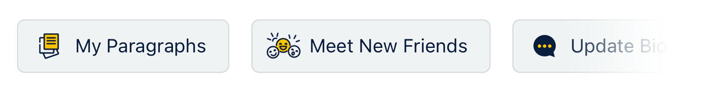

To date, we have successfully attracted a group of people who are interested in making pen pals through SLOWLY, and the number of users is higher than anticipated (more than 4.5 million users and counting!). From the collected stories and feedback, we can truly feel the joy that users find in writing letters. Such a unique experience of communicating in words is irreplaceable and should not be forgotten.
However, although many users are interested, some tend to give up for various reasons during the exploration stage, which is understandable. After all, there are many convenient and efficient ways of communication today; why take the time to write a letter with hundreds or even thousands of words? Furthermore, writing a letter is not easy in the first place, and it is even more difficult to persist.
Therefore, the main purpose of this update and our future development goal is to help users get started easily, from getting interested in making pen pals to writing the first letter. We will lead users step by step to experience the joyful journey of making pen pals in SLOWLY.
New feature: My Paragraphs
Since it can be challenging to write a letter, let’s break it down.
When you encounter things or feelings you want to share in your daily life, you can immediately write them down in the form of ‘Paragraph’, so that they can be conveniently used when writing letters in the future. It can also be used to save some texts that will be reused all the time, such as your hobbies or hometown introduction, etc. It allows you to select them directly from ‘My Paragraphs’ and insert them into your letters.
A shortcut bar on the home screen, which also serves as usage tips
The new shortcut bar not only allows you to quickly put ‘inspiration’ into ‘paragraph’ for future use, but it also provides an introduction to some features and the concepts behind.

The shortcut bar will display differently according to the user’s usage pattern. For instance, it will display a ‘Write a Bio’ button if you have not filled in your bio, and so on. Future updates will include more features to appear on the shortcut bar.
Reply Reminder can now be set to Daily or Weekly
The habit of writing down daily experiences and feelings in the form of letters is a therapeutic process. Everyone has their own writing habits; set a fixed period for yourself, like one hour before going to bed every day or Sunday morning, and then set a reply reminder in the app. Slowly will notify you at the specified time to help you develop a habit.
And more…
In addition to the features mentioned above, there are also some minor optimizations and improvements. For example, we have added word count on both the writing and reading screens that you can check by clicking the More button (three-dot icon). Also, based on the reports received in the past few years, we have written an article about safety tips on online scams. In the future, more informative articles will be published according to the situation and needs. Lastly, there are various other fixes and optimizations, including adjustment to the font scaling on the mobile app, and so on. For specific details, kindly refer to the release notes.
We hope you will like this update.